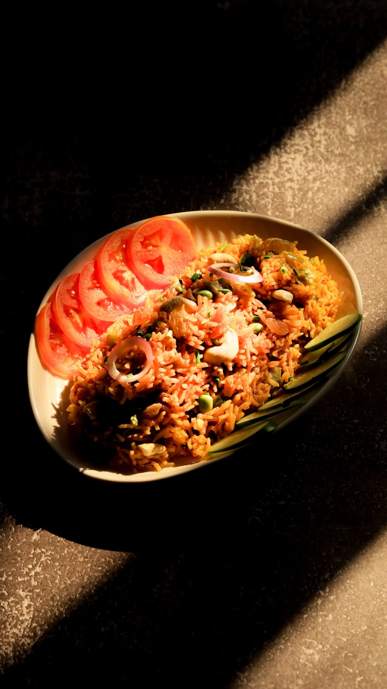

Pulav

Description
Pulav, also known as Pulao, is a flavorful rice dish made by cooking aromatic basmati rice with vegetables, spices, and herbs. It is a simple yet delicious dish with a rich aroma and a mildly spiced taste.
Pulav is commonly served with raita, salad, or curry and can be prepared with vegetables, chicken, or other ingredients.
Ingredients
- 2 cups basmati rice
- 3 tablespoons oil or ghee
- 1 large onion, thinly sliced
- 1 cup mixed vegetables (carrots, peas, beans, or potatoes)
- 1 tablespoon ginger-garlic paste
- 2-3 green chilies, sliced
- 1 teaspoon cumin seeds
- 2-3 cloves
- 1-2 cinnamon sticks
- 2-3 green cardamom pods
- 1 bay leaf
- 4 cups water or vegetable/chicken stock
- 2 tablespoons fresh coriander, chopped
- 2 tablespoons fresh mint leaves, chopped
- Salt to taste
Steps to Follow
- Wash the basmati rice thoroughly and soak it in water for 20-30 minutes. Drain before cooking.
- Heat oil or ghee in a pot. Add cumin seeds, cloves, cinnamon, cardamom, and bay leaf. Fry for a few seconds until aromatic.
- Add sliced onions and cook until they become golden brown.
- Add ginger-garlic paste and green chilies. Cook for 1 minute.
- Add mixed vegetables and cook for a few minutes until slightly tender.
- Add the soaked rice and gently mix with the vegetables and spices.
- Pour in water or stock, add salt, and bring it to a boil.
- Reduce the heat, cover the pot with a lid, and cook for 15-20 minutes until the rice is soft and all the liquid is absorbed.
- Turn off the heat and let the pulav rest for 5 minutes before serving.
- Fluff the rice gently with a fork, garnish with coriander and mint, and serve hot with raita, salad, or curry.
Go Back to Home Page